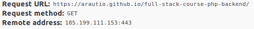

Aki Rautio
Browser will send a request to the server which it tries to connect and it looks like this:
The server will read this information and act according to it.
Client (browser or an application) can use different types of methods when making a request to our application. These different methods tell what kind of action is expected from our application.
The most common ones are GET and POST methods and we are going to use them both in the course.
GET method request is executed when user writes url to address bar or clicks the link.
If we want to pass parameters in get request it can be done by adding ? after our php file in address bar and writing parameters like:
http://localhost/feedback.php?name=Test&email=test@test.com
PHP has a variable $_GET which will have the parameters from GET request when such is given.
<?php
$name = isset($_GET['name']) ? $_GET['name'] : '';
$email = isset($_GET['email']) ? $_GET['email'] : '';
if ( len($name) > 0 && len($email) > 0 ) {
print "Name: " + $name;
print "Email: " + $email;
}
?>
POST method request is executed when user press a submit button in a form.
Parameters for this request comes from the form.
<form action="feedback.php">
<input type="text" name="email"/>
<input type="submit value="Send" />
</form>
PHP has a variable $_POST which will have the parameters from POST request when such is given.
<?php
$name = isset($_POST['name']) ? $_POST['name'] : '';
$email = "";
if ( len($name) > 0 && len($email) > 0 ) {
print "Name: " + $name;
print "Email: " + $email;
}
?>
Besides method based PHP variables there is also an universal variable $_REQUEST which contains information from both.
<?php
$name = isset($_REQUEST['name']) ? $_REQUEST['name'] : '';
$email = isset($_REQUEST['email']) ? $_REQUEST['email'] : '';
if ( len($name) > 0 && len($email) > 0 ) {
print "Name: " + $name;
print "Email: " + $email;
}
?>